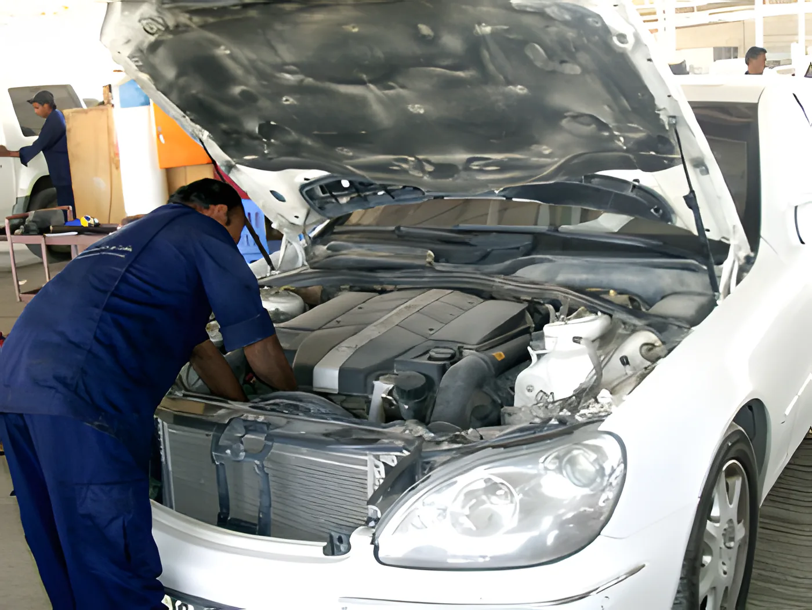

01 · السيارات الخفيفةصالون · دفع رباعي · فانات
كل أنواع السيارات، القديمة والحديثة
والمركبات الخفيفة، من سيارة العائلة إلى البيك أب وفان التبريد.
- 01فحص كمبيوتر للسيارة
- 02ترصيص الإطارات (ميزان)
- 03عمرة مكائن
- 04عمرة جير أوتوماتيك
- 05كهرباء ومكيفات
- 06سمكرة، خلط صبغ بالكمبيوتر، غرفة صبغ مكيّفة
- 07غسيل وخدمة
- 08صيانة مكائن سيارات التبريد
مشرف السيارات الخفيفة050 629 0581